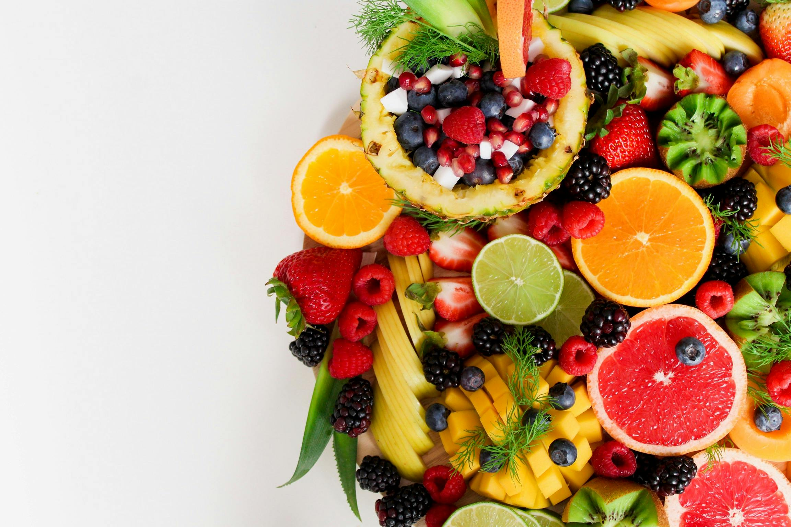

Selecione seu perfil
Sua orientação nutricional aparecerá aqui
Preencha o formulário ao lado para receber recomendações
Orientações personalizadas para suas refeições diárias
Este guia oferece orientações personalizadas sobre alimentação saudável, considerando diferentes faixas etárias, condições de saúde e níveis de renda para ajudar você a manter uma dieta equilibrada.

Preencha o formulário ao lado para receber recomendações
Descubra fatos interessantes sobre alimentação e hábitos saudáveis! Clique no botão abaixo para aprender algo novo:
Clique no botão acima para ver uma curiosidade!